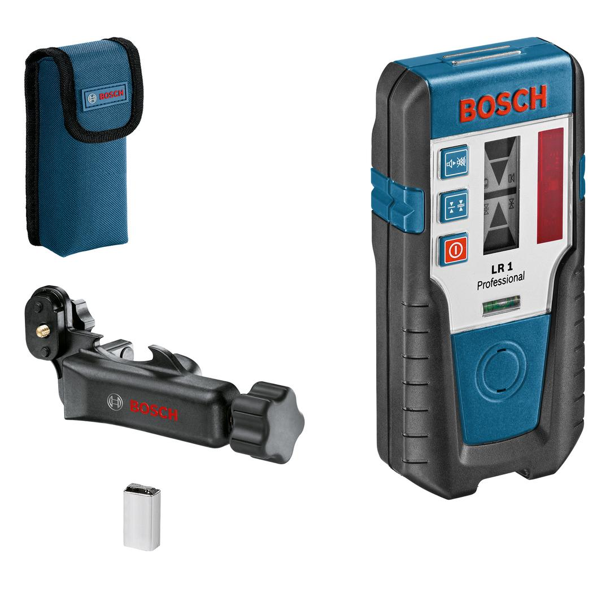
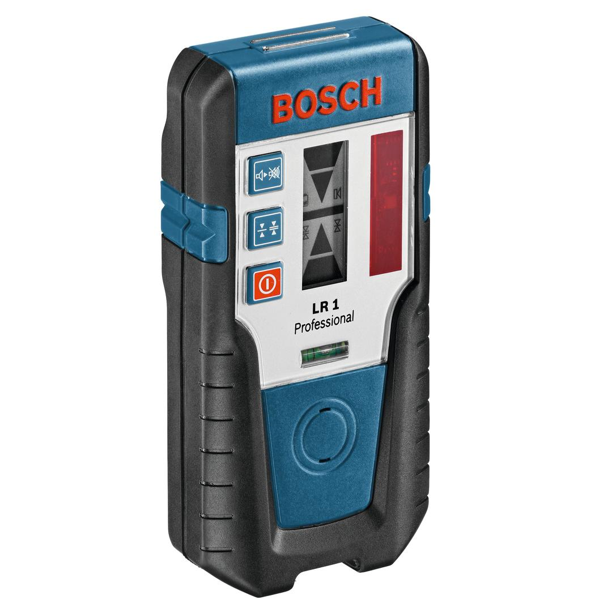

0601015400


| Power supply |
1 x 9 V 6LR61 Block |
| Dust and splash protection |
IP65 |
| Weight, approx. |
0.250 kg |
| Tool dimensions (width) |
75 mm |
| Tool dimensions (length) |
145 mm |
| Tool dimensions (height) |
30 mm |
| Measuring accuracy (fine/rough) |
± 1.0 mm/± 3.0 mm |
| Type of receiver |
Rotation lasers |
More benefit thanks to accessories